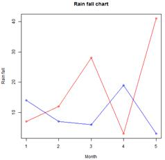

A line chart is a graph that connects a series of points by drawing line segments between them. These points are ordered in one of their coordinate (usually the x-coordinate) value. Line charts are usually used in identifying the trends in data.
The plot() function in R is used to create the line graph.
Syntax
The basic syntax to create a line chart in R is –
plot(v,type,col,xlab,ylab)
Following is the description of the parameters used –
1. v is a vector containing the numeric values.
2. type takes the value "p" to draw only the points, "l" to draw only the lines and "o" to draw both points and lines.
3. xlab is the label for x axis.
4. ylab is the label for y axis.
5. main is the Title of the chart.
6. col is used to give colors to both the points and lines.
Example
A simple line chart is created using the input vector and the type parameter as "O". The below script will create and save a line chart in the current R working directory.
# Create the data for the chart.
v <- c(7,12,28,3,41)
# Give the chart file a name.
png(file = "line_chart.jpg")
# Plot the bar chart.
plot(v,type = "o")
# Save the file.
dev.off()
When we execute the above code, it produces the following result −

Line Chart Title, Color and Labels
The features of the line chart can be expanded by using additional parameters. We add color to the points and lines, give a title to the chart and add labels to the axes.
Example
# Create the data for the chart.
v <- c(7,12,28,3,41)
# Give the chart file a name.
png(file = "line_chart_label_colored.jpg")
# Plot the bar chart.
plot(v,type = "o", col = "red", xlab = "Month", ylab = "Rain fall",
main = "Rain fall chart")
# Save the file.
dev.off()
When we execute the above code, it produces the following result −

Multiple Lines in a Line Chart
More than one line can be drawn on the same chart by using the lines()function.
After the first line is plotted, the lines() function can use an additional vector as input to draw the second line in the chart,
# Create the data for the chart.
v <- c(7,12,28,3,41)
t <- c(14,7,6,19,3)
# Give the chart file a name.
png(file = "line_chart_2_lines.jpg")
# Plot the bar chart.
plot(v,type = "o",col = "red", xlab = "Month", ylab = "Rain fall",
main = "Rain fall chart")
lines(t, type = "o", col = "blue")
# Save the file.
dev.off()
When we execute the above code, it produces the following result −
